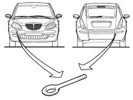

TOWING POINTS
- Path
- Technical Data > General information > VEHICLE TOWING AND LIFTING POINTS > TOWING POINTS
- Kind
- technical data / specifications
- Applies to
- all engines; all production periods
- Interactive page
- https://sloeber94.github.io/elrnDB-lYpsln/en/#/2427656
Applies to: all engines; all production periods
The vehicle has two threaded sockets, one at the front and one at the rear, for fitting the tow hook which is housed in the compartment in the spare wheel in the luggage compartment under the carpet.
Applies to: all engines; all production periods

Applies to: all engines; all production periods
Applies to: all engines; all production periods
Applies to: all engines; all production periods
Applies to: all engines; all production periods